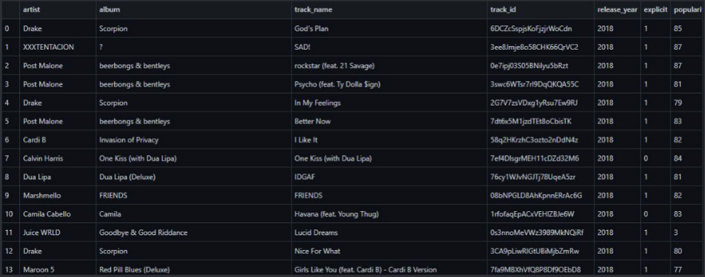
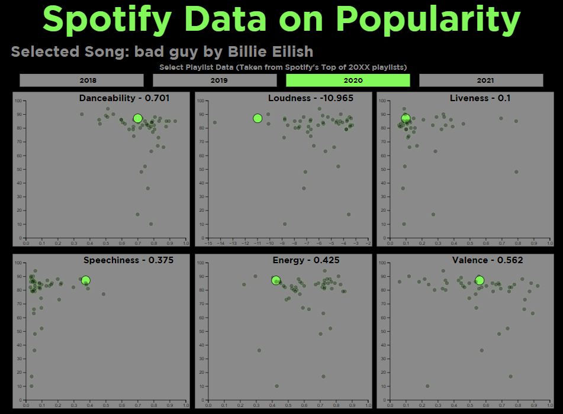

March 2022
Visualizing Spotify Data
Using Python data mining and d3 javascript visualization
×
Visualizing Spotify Data with d3
Link to Visual
Link to Github
Background
Spotify is one of, if not the most popular music streaming service used today. What many people don't know is that Spotify has strangely specific data on each song uploaded to its platform. Numerical values ranging from how danceable a song is to how happy the tone of the song is.
This project was created to visually display interesting Spotify data in order to analyze and hopefully answer the question: "What makes a song popular?"
Data Collection
Gathering the data was done using Spotify's python library, Spotipy. Yhe API allowed for the scraping of song information, audio information, and each song's calculated popularity scores.
In order to get the best grasp of what trends "Popular" songs follow, I gave Spotipy the playlist ID's of the top tracks of 2018 - 2021, each of which contained either 50 or 100 songs on Spotify's most popular songs of those years.
After some data analysis and cleaning, the code produced a csv file of 250 songs and their data curated by Spotify.
The Visual
Created using the Javascript libaray D3, the website contains 4 tabs, each representing a different "top tracks of the year" playlist with 6 graphs each.
All graphs have the same Y-Axis which represents a song's popularity calculated by Spotify. Each graph has a different X-Axis, representing the numerical score of a songs Danceability, Loudness, Liveness, Speechiness, Energy and Valance.
Each graph has the same songs which connects every graph. For Example:
In the above screenshot, I went into the 2020 tab and selected the song "Bad Guy" by Billie Eilish in the "Loudness" graph. Doing so has highlighted where the song is on every graph and also shown the score associated with the song/category in the title of the graph. Selecting another song or clicking the blank space of a graph will deselect a song.
From this data, the songs that are seen as "popular" in the past 4 years have some common traits such as:
- High Energy
- Generally Louder
- Very "Danceable"
The one graph that doesn't really show anything is the Valence graph, which shows that a song doesn't have to be "Happy" or "Sad" to be popular.
Going Forward
Creating this visualization was pretty interesting, as it taught me the intricacies of visualizing data and just how much you can add to make illustrations interesting yet infomative. There are a couple things that I would like to add to make the visuals better:
- A Spotify music player (So you can listen to the music you select)
- Maybe adding "Popularity" to the Y-Axis of each graph
- More songs that aren't as popular
- A song selector to look up points
If you would like to see more about this project, please check out this Progress Book on the process of creating this project!